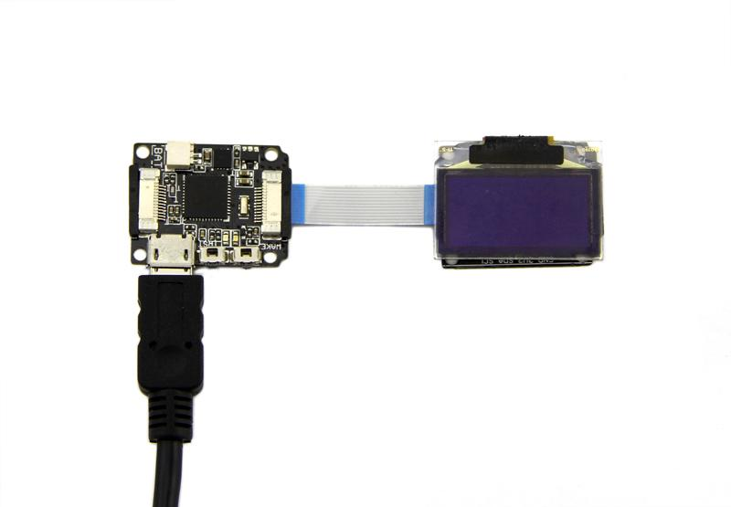

The advantage of OLED is its power consumption. In addition to E-ink, the OLED maybe is the most energy efficient screen. 128x64 OLED screen is very cool. This module is equipped with the most comprehensive software support, you can effortlessly draw the pattern that you want on this screen. When you look it like the all-metal Xadow clock , you know I did not lie to you.
Please notice: heavy impact or stress on the OLED will cause the breakdown of screen..
Based on the strong library file, you can display various patterns on the screen.
The hardware installation:

Note: when connect Xadow OLED to Xadow Main Board, you should concern about the connection direction. The connection method is that the unfilled corner of one Xadow module need to connect to the right angle of another module(see four corners of each Xadow module).
Upload the code:
Download OLED Library and install it to your Arduino Library.Open any code by the path:Files->Examples->OLED_Display12864->examples, such as OLED_Bitmap_Inverse_Hello_World, so you will observe "Hello World" in OLED screen.
Xadow OLED Eagle File
Xadow OLED Library